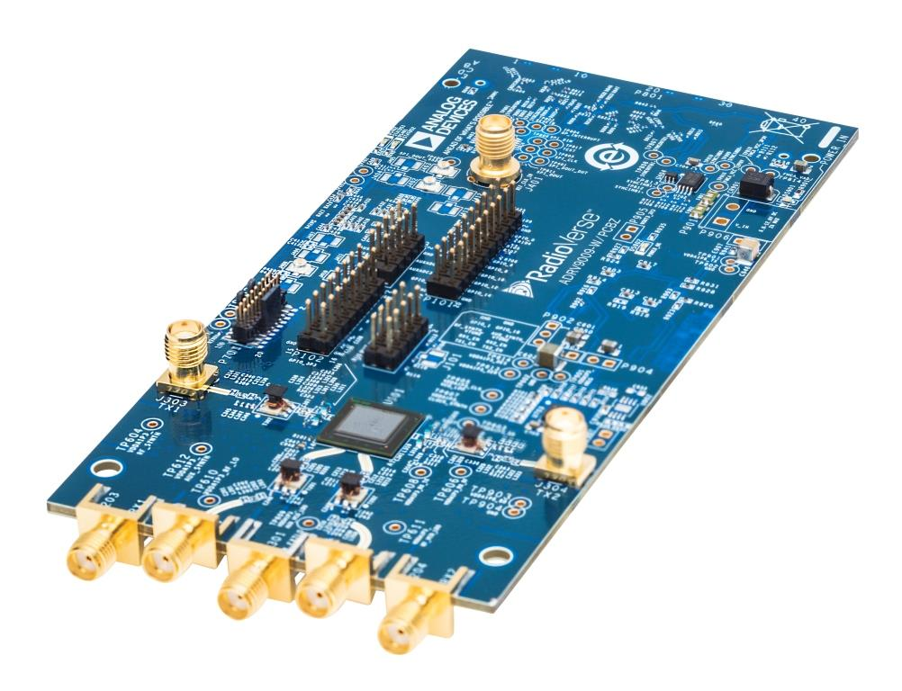
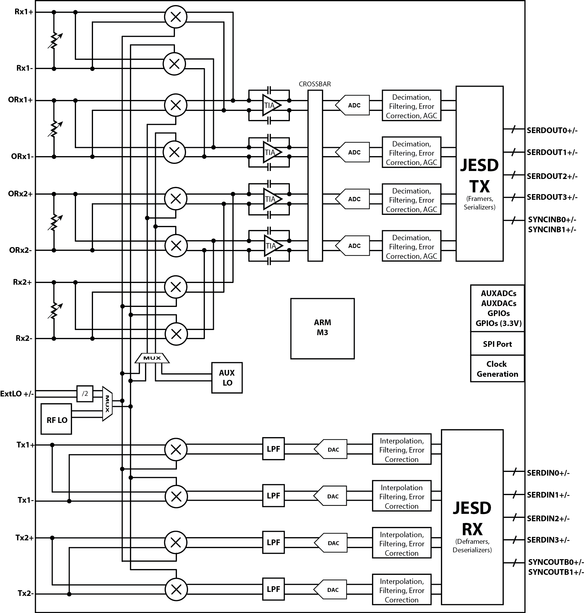

ADRV9009 & ADRV9008

The ADRV9009-W/PCBZ, ADRV9008-1W/PCBZ and ADRV9008-2W/PCBZ are FMC radio cards for the ADRV9009 and ADRV9008, respectively, a highly integrated RF Transceiver™. While the complete chip level design package can be found on the ADI web site, information on the card and how to use it, the design package that surrounds it, and the software which can make it work can be found here.
Table of Contents
People who follow the flow that is outlined, have a much better experience with things. However, like many things, documentation is never as complete as it should be. If you have any questions, feel free to ask.
Use the board to better understand the ADRV9009/ADRV9008-1/ADRV9008-2
Linux Applications
Push custom data into/out of the ADRV9009/ADRV9008
Design with the ADRV9009/ADRV9008
Hardware in the Loop / How to design your own custom BaseBand
Design a custom ADRV9009/ADRV9008 based platform
Linux software
Changing the VCXO frequency and updating the default RF Transceiver Profile
HDL Reference Design which you must use in your FPGA.
Additional Documentation about SDR Signal Chains - The math behind the RF
Block diagram
Videos
Software Defined Radio using the Linux IIO Framework
ADI Articles
Four Quick Steps to Production: Using Model-Based Design for Software-Defined Radio
MathWorks Webinars
Warning
All the products described on this page include ESD (electrostatic discharge) sensitive devices. Electrostatic charges as high as 4000V readily accumulate on the human body or test equipment and can discharge without detection. Although the boards feature ESD protection circuitry, permanent damage may occur on devices subjected to high-energy electrostatic discharges. Therefore, proper ESD precautions are recommended to avoid performance degradation or loss of functionality. This includes removing static charge on external equipment, cables, or antennas before connecting to the device.